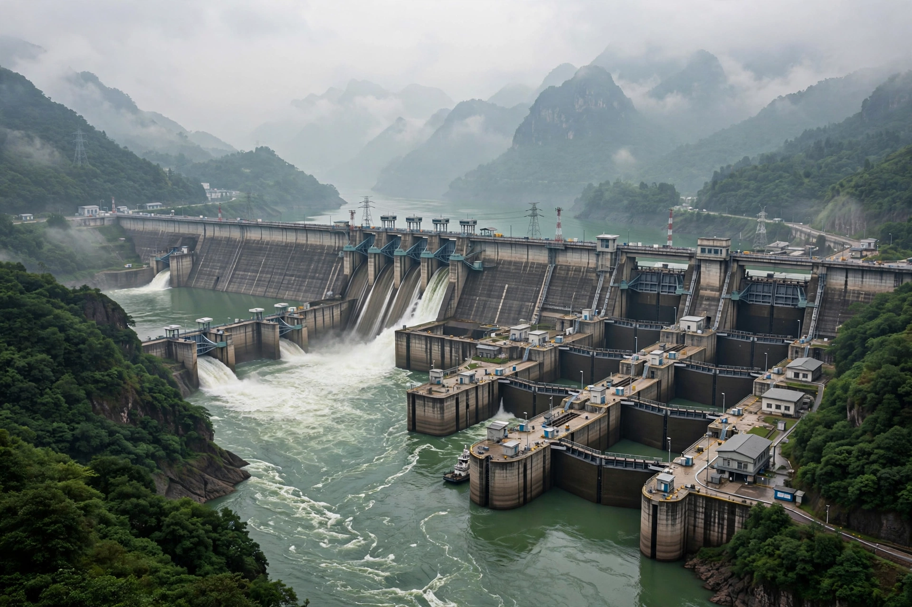

[Image placeholder: The Three Gorges Dam in China, the world's largest power station by installed capacity]**Hydroelectricity**, also called hydropower, is electricity generated by harnessing the energy of moving water, usually by damming a river so that water falls through turbines coupled to generators. It is the largest single source of renewable electricity in the world, supplying roughly 15% of global electricity generation and more than half of all renewable electricity.
The largest power stations on Earth are hydroelectric, led by China's Three Gorges Dam (22,500 MW) and Baihetan Dam, and Brazil–Paraguay's Itaipu Dam. Pumped storage accounts for the great majority of the world's grid-scale electricity storage.
Waterwheels powered mills for centuries before electricity. The first hydroelectric schemes appeared in the late 1870s, lighting an American chair factory and Cragside house in England; by the early twentieth century large dams such as Hoover Dam (1936) symbolised industrial modernity. Small and micro hydro remain important in mountainous regions.
A dam raises the water level to create 'head'; water released through penstocks spins Francis, Kaplan or Pelton turbines depending on head and flow. Run-of-the-river schemes generate with little or no reservoir. Output can be varied within minutes, making hydro valuable for balancing grids and for black starts after outages.
Hydropower has very low operating emissions and lifetimes of many decades, but large reservoirs flood land, displace communities, alter ecosystems and sediment flow, and can emit methane from submerged vegetation. Safety failures, such as the 1975 Banqiao Dam disaster in China, rank among the worst industrial accidents in history.